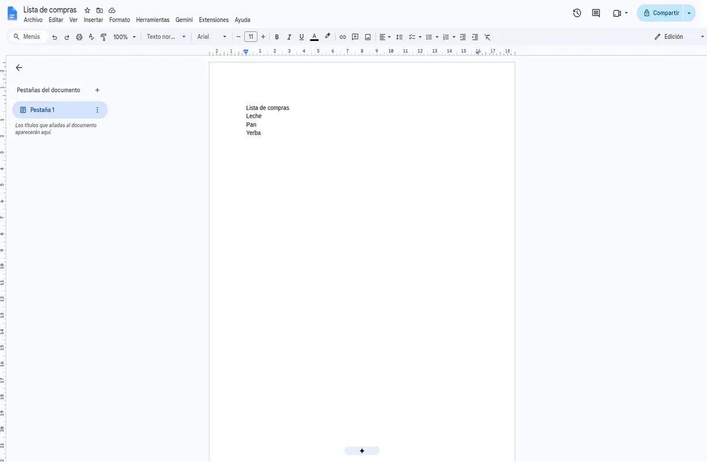

Lección 12 · 19/11/2026
Cómo buscar y reemplazar una palabra en Google Docs (3 pasos)
¿Escribiste la misma palabra muchas veces? Cambiala de una sola vez en Documentos de Google: Editar → Buscar y reemplazar (Ctrl + H), escribí la palab…
Canal de YouTube · @soporteCasero
Tutoriales cortos de tecnología para resolver en casa, paso a paso y en español. Ahora: el curso completo de Google Documentos, menú por menú.
Cuenta regresiva
tutoriales por publicar · opciones de menú: quedan 211 de 216
Lección 12 · 19/11/2026
¿Escribiste la misma palabra muchas veces? Cambiala de una sola vez en Documentos de Google: Editar → Buscar y reemplazar (Ctrl + H), escribí la palab…

Lección 1 · 18/11/2026
¿Necesitás escribir algo y no tenés Word? Creá un documento gratis en Documentos de Google en 3 pasos: entrá a docs.google.com, tocá Documento en blan…